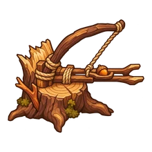
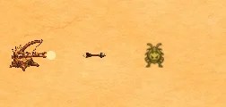
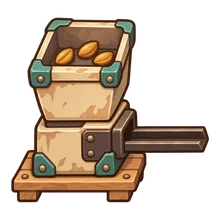
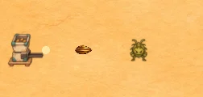
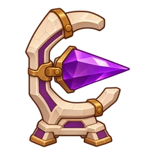
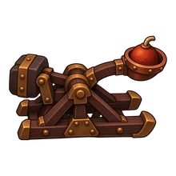
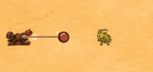
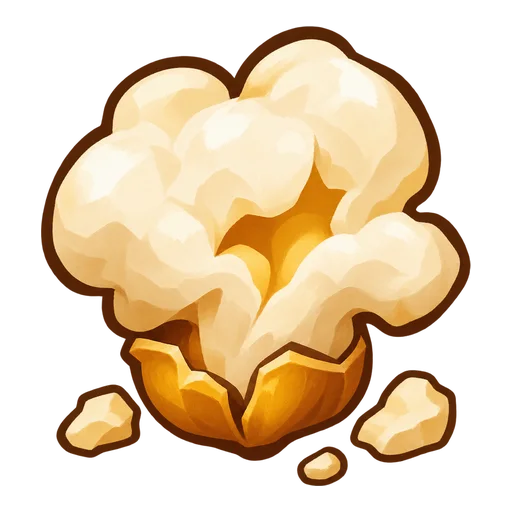
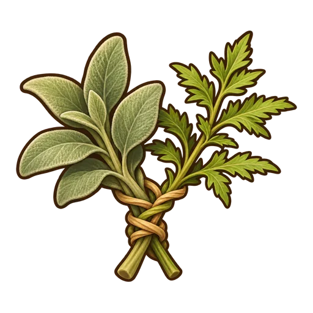

Sürü dalgaları
5, 9, 13 ve 17. dalgalar boss içermez. Sürü, dönen bir geçit bırakarak 7 saniye baskı kurar; ardından 3 saniye toparlanma süresi verir.

123 eşya · 15 karakter · 15 silah · 10 boss
5, 9, 13 ve 17. dalgalar boss içermez. Sürü, dönen bir geçit bırakarak 7 saniye baskı kurar; ardından 3 saniye toparlanma süresi verir.

Can yenilenmesi seni yaralar; kaybettiğin canın beş katı hasarla çevrene diken saçar.
Patlak Mısır patlama zinciri oluşturur. Kurtlu Çekirdek kalan delişleri aynı hedefe yöneltir. Yabani Ot iki silah ailesinin setlerini eşleştirir.
Dunpy Mandalina Dilimi kullanır. Dalga sonunda yerde kalan her 20 malzeme Poro’yu geliştirir; Poro ilk seviyeden itibaren her dalga bir darbeyi engeller.
Sarmaşık Salatalık yürüyerek kapattığı halkadaki düşmanları kökler. Çeşnici Sarımsak silah aileleriyle tarifler kurar. Kilerci Bal Kabağı ilk sandığını dükkânda değiştirebilir.
Kalabalıkta birbirine yakın hasar sayıları kısa süreli bir toplamda birleşir. Çürük Kök’ün dikenleri ayrı bir görselle gösterilir.
Dükkândan her tipten en fazla iki taret alabilirsin. Satın aldıkların silah yuvası kullanmadan her dalga başında kurulur. Fiyatlar ve menziller taban değerlerdir.

Kütüğe bağlı yay ince bir tahta ok fırlatır. Taret Fidanı kırılan her ağacın yerine bu tareti kurar. Taret o dalga boyunca kalır ve ağaç normal ganimetini bırakır.


Hazneden tek hedefe altın renkli tohum atar. Taban menzili 420’den 200’e indi. Her +10 Menzil, Kademe I ve Ağaç Tareti için +15 menzil kazandırır.


Fırın, yakınındaki düşmanları geniş bir turuncu alev konisiyle topluca vurur. Koninin içindeki birden fazla hedef aynı anda hasar alabilir.


Prizma, ateşlediği anda menzilin sonuna ulaşan mor bir ışın çıkarır. Işın hattına giren birden fazla hedefi deler.


Mancınık yavaş, fitilli bir bomba fırlatır. Bomba ilk temasta veya menzilinin sonunda patlar ve çevredeki hedeflere hasar verir.

Kahramanın ve giydiği ekipman sağa sola hareket ederken onunla birlikte döner. Durduğunda veya dikey yürüdüğünde son baktığı yön korunur.



Tahmini üç aylık geliştirme takvimi
Her birinden koşu başına bir tane alınır. Fiyatlar taban malzeme bedelidir.
Dükkân ve sandık eşyaları. Fiyatlar taban malzeme bedelidir.
Bu aramayla eşleşen eşya bulunamadı.
Her karakterin başlangıç özellikleri ve bedelleri.
10. ve 15. dalgada bir, 20. dalgada iki farklı boss gelir.
Saldırı biçimi, taban hasarı ve menzili.